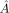
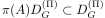

Orbital angular momentum, Lie groups and Lie algebras
I’ve been trying to understand angular momentum in quantum systems and thought it would be a good idea to write some notes here. My goal is to give a basic introduction to the theory in sufficient rigor without ignoring some of the physical consequences of the mathematics. This will be spread out in multiple posts. In this brief post, I’ll give the basic setup for the theory of orbital angular momentum, and how the resulting operators directly relate to both and . We’ll end up where the physics literature usually starts.
Before doing so, here is a small rant. Symmetries play a fundamental role in physics for reasons that, although very natural, are still quite mysterious to me. In particular, certain Lie groups play a central role in both classical and quantum mechanics. In classical mechanics, the angular momentum components can be thought of as the Hamiltonian generators of rotations. This interpretation carries over quite nicely to quantum systems via Stone’s theorem. In the case of a particle moving in (ignoring spin), the rotation group can be represented by a strongly-continuous unitary representation, and its infinitesimal generators, the well known orbital angular momentum operators, can be obtained from a representation of its Lie algebra . A natural question that has been bugging me for a while arises here:
From a physical point of view, which is more fundamental: the Lie group representing the physical symmetries, or its Lie algebra?
After all, aren’t the angular momentum operators the observables of the system? Isn’t also true that the physics literature usually starts with these operators and their commutation relations, extracting as much information as possible to solve problems of interest, like those dealing with rotational invariance? In such cases the operators representing also carry physical meaning as constants of motion. Moreover, to describe all spin systems, don’t we need to identify the irreducible representations of or equivalently, those of the Lie group ? I believe these are valid arguments (and there are other, more intriguing ones, see this physics.stackexchange post), so I can’t disagree entirely yet. However, I believe we should not lose sight of the fact that it is the group structure that fundamentally encodes the physical symmetry, not its linearization. In the case at hand, is the group of spatial rotations, not its Lie algebra and not . Regarding spin, the confusion seems to stem from a failure of acknowledging the fundamentally projective nature of the quantum state space. The theorems of Wigner and Kadison tell us that the representations of the symmetry groups are at best projective. For example, all spin representations arise from but only when we distinguish between unitary and projective unitary representations. The half-integer spin representations appear as the latter. The introduction of to fully described quantum angular momentum is done mainly for technical reasons, as the projective representations of can be lifted to true unitary representations at the level of its universal covering group, and unitary representations are usually easier to handle. Furthermore, from a mathematical point view, we must not forget that in general a Lie group will contain global information that is lost when passing to its Lie algebra. This surely has physical implications.
Enough of that, let’s begin. The system we will consider is that of a particle moving in , ignoring spin for now. The pure quantum states can be represented by elements of the Hilbert space . The group of spatial rotations in is , the compact and connected Lie group of orthogonal matrices with unit determinant. On , the group carries a natural representation defined as
| (1) |
for all . The representation is unitary and strongly-continuous. We wish to associate with representations of the Lie algebra , in terms of skew-self-adjoint operators on . As a reminder, the Lie algebra of a Lie group is defined to be the tangent space at the identity element . In the case of the rotation group, its Lie algebra consists of the traceless skew-symmetric real matrices. Any element defines the one-parameter subgroup . Using , we can define a strongly-continuous unitary one-paramter group
| (2) |
By Stone’s theorem there exists a unique self-adjoint operator that satisfies
| (3) |
We call  the self-adjoint generator (of the strongly-continuous unitary one parameter group) associated to . Its domain is given by
| (4) |
and its image on can be computed as
| (5) |
Actually computing the Stone domain is usually non-trivial, moreover, nothing guarantees
that the Stone domains of any two generators will coincide. So if we have any hope of defining
a representation of the Lie algebra, we will need to find a suitable common invariant dense
domain for all generators. For the case at hand, the Schwartz space of rapidly decreasing
test functions works just fine. But, there is an alternative domain that
actually holds for arbitrary strongly-continuous unitary representations of a
(finite dimensional) real Lie group , the so-called Gårding domain. This domain,
denoted by can be defined as the subspace of all such that the map
is an element of . There are many properties of the Gårding
space that make it very useful for dealing with representations of Lie groups and
algebras, e.g., there is a natural correspondance between the action of the unitary
representation, and the usual left action of the group on its space of functions. For our
purposes only the following few properties are important (for more, please see Valter
Moretti’s Fundamental Mathematical Structures of Quantum Mechanics, from which this
post takes plenty). First, is dense in . Second, it is invariant under the
representation, i.e.,  for all . Third, the map defined
as
for all . Third, the map defined
as
| (6) |
takes the element to a skew-symmetric operator defined by restricting the Stone generator associated to to the Gårding domain. With some work, it can be shown that is an -linear representation of the Lie algebra , i.e.,  and
| (7) |
The final important property is that the closure of the representation is equal to the Stone generator, i.e.,
| (8) |
Setting and , we now see that from a unitary representation of the rotation group, we’ve obtained a representation of the associated Lie algebra, by restricting the generators of the unitary representation and multiplying by a factor in order to preserve the bracket. Let us now work out what looks like explicitly. A basis for is given by the traceless and skew-symmetric matrices
| (9) |
These satisfy the well known commutation relations
| (10) |
Take as an example. The subgroup generated by can be expressed as
which is of course nothing more than the matrix corresponding to a rotation of angle about the -axis of some coordinate frame. Using , the generator corresponding to (which we now denote by ) has the following effect on any :
where and are the self-adjoint position and momentum operators restricted to the Stone domain of . The self-adjoint operator is the orbital angular momentum operator for the -axis. This result matches what we obtain by the usual quantization of the classical angular momentum vector . Repeating the procedure for the other two orthogonal axis we obtain
| (17) |
It seems so little has been gained by taking the domain issues of unbounded operators seriously, but what do I know. On the Gårding domain , a quick calculation reveals that the satisfy the commutation relations
| (18) |
It immediately follows that the satisfy
Thus preserves the Lie bracket of , as it should. So restricting to the Gårding domain, the real span of the constitute a Lie algebra representation of in terms of skew-symmetric operators on . Just as we desired!
So we’ve briefly shown how the orbital angular momentum operators of quantum mechanics are the infinitesimal generators of a strongly-continuous unitary representation of the rotation group, and at the same time, how they induce a representation of the associated Lie algebra. Usually the next task consists of identifying the finite unitary irreducible representations of . This is conveniently done by identifying the finite unitary irreducible representations of or equivalently those of . Doing so, we will encounter the fact that only some of these representations can actually be “found inside” the infinite-dimensional representation of the rotation group. In the physics jargon, one says that only the integer representations appear as subrepresentations of the orbital angular momentum. Of course, what is actually meant is that truely unitary representations only exist for integer spin. In the next post I hope to show how we can realize these integer spin representations in and how they’re used for solving the Schrödinger equation for rotationally invariant Hamiltonians.